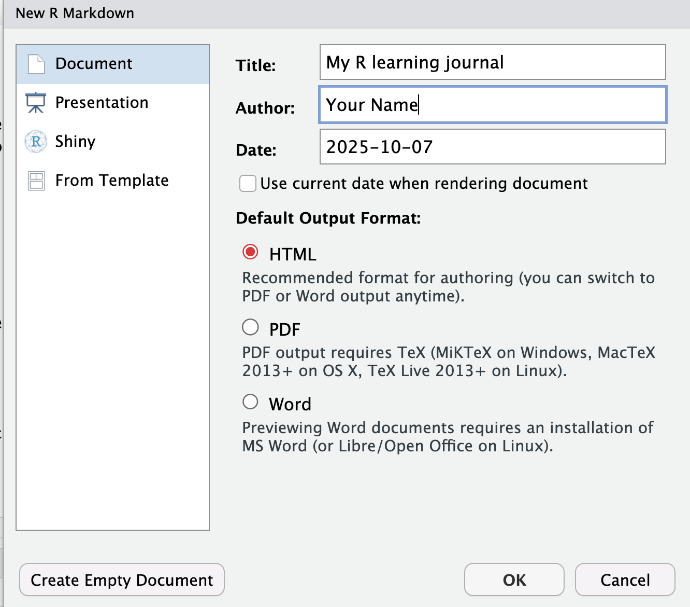
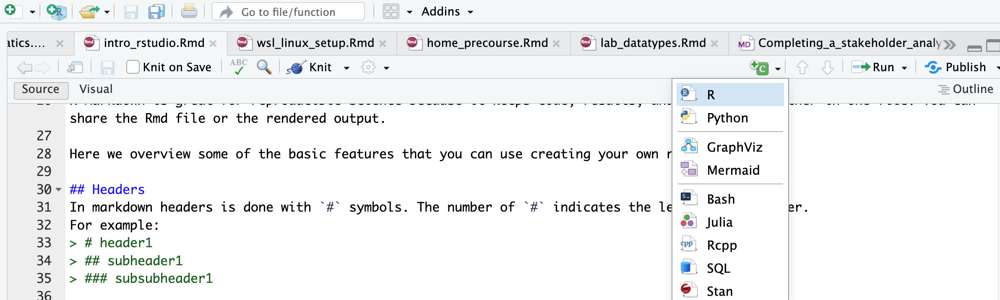

Hello R Markdown: Tell Your Research Story
Nima Rafati
introduction
R markdown is a file format for making dynamic documents with R. It combines plain text with embedded chunks of R code that are run when you knit (render) the document to HTML, PDF, or Word.
R Markdown is great for reproducible science because it keeps code, results, and narrative together in one file. You can share the Rmd file or the rendered output.
Here we overview some of the basic features that you can use creating your own report.
Create an R Markdown file
In RStudio:
1. File → New File → R Markdown… → Document → Title = “My R learning journal”. Choose HTML. Save as learning_journal.Rmd.


Anatomy of an Rmd
- YAML header (between
---) controls output settings. - Markdown text: headings, lists, links, images.
- Code chunks: run R (or bash, python, etc.).
YAML header
The YAML header is between the --- at the top of the file. It controls output settings like title, author, output format, table of contents, and more.
For example:
---
title: "My R learning journal"
author: "Your Name"
date: "2025-10-07" # calls system date
output:
html_document:
toc: true #table of contents
toc_depth: 3 #levels of headers in toc
number_sections: true #number headers
---Markdown text
Markdown is a lightweight markup language for adding structure to plain text. It’s easy to learn and widely used.
Common elements include:
## Headers
In markdown headers is done with # symbols. The number of # indicates the level of the header.
For example:
# Header 1
## Header 2
### Header 3Common formatting
Bold text: **bold**
Italic text: *italic*
`inline code` `1 + 1`
Lists:
- item one
- item two
1. first
2. second
Links:
[NBIS](https://nbis.se)
Inserting an image:
Coding chunks
You can insert an R chunk by clicking the green button with + and then selecting R.

Or by ctrl + option + i (Mac) or ctrl + alt + i (Windows).
1 + 1:
1 + 1 ## [1] 2In code chunks you can specify certain behaviors with chunk options.
Common chunk options include:
| Option | Description | Example |
|---|---|---|
eval |
Whether to evaluate (run) the code | eval = TRUE |
echo |
Whether to show the code in the output | echo = FALSE |
fig.width |
Width of figures in inches | fig.width = 7 |
fig.height |
Height of figures in inches | fig.height = 5 |
message |
Whether to show messages generated by the code | message = FALSE |
warning |
Whether to show warnings generated by the code | warning = FALSE |
results |
How to display results: markup (default), asis, hold, hide |
results = 'hide' |
For example, this chunk will run the code and show the code and results, but hide messages and warnings based on this option settings eval=TRUE, echo=TRUE, message=FALSE, warning=FALSE :
summary(cars) # shows summary statistics of the built-in cars dataset## speed dist
## Min. : 4.0 Min. : 2.00
## 1st Qu.:12.0 1st Qu.: 26.00
## Median :15.0 Median : 36.00
## Mean :15.4 Mean : 42.98
## 3rd Qu.:19.0 3rd Qu.: 56.00
## Max. :25.0 Max. :120.00Story starter
Write about yourself and project that you are working on.
What do you want to learn in this course?
- I would like to learn…..
- …..
A simple math example
Write a simple calculation in a code chunk. This chunk will run the code and show both the code and results based on this option settings eval=TRUE, echo=TRUE :
# Calculate the sum of two numbersInsert an image
You can insert an image using markdown syntax. For example, to insert an image located at images/my_image.png, you would write:

You can also insert the image in an R chunk using knitr::include_graphics() function:
knitr::include_graphics("images/my_image.png")Knit (render) to HTML
Click the Knit button.

Command overview
| Command / Action | What it does | Example |
|---|---|---|
| File → New File → R Markdown | Creates a new Rmd template | Create learning_journal.Rmd |
rmarkdown::render() |
Renders (knits) to HTML/PDF/Word | rmarkdown::render("learning_journal.Rmd") |
| Markdown headings/lists | Structures your narrative | ## Project idea |
| Code chunk fences | Runs R code reproducibly | |
| Chunk options | Controls code chunk behavior | echo=FALSE, fig.width=7 |
| Inline R code | Embeds R results in text | `r 2 + 2 ` |
Quiz time!
Mini challenges to lock in learning. Hints are inline. Click to reveal answers.
Q1. Predict: If you press Knit but the file is unsaved, what happens?
Hint: What does Knit need to know about file location?
# Answer:
# RStudio will prompt you to save the file because knitting needs a file on disk
# to determine paths and create the output in the same directory.Q2. Your report shows raw code but no formatted headings. Why?
Hint: Are you using Markdown symbols correctly?
# Answer:
# You likely forgot Markdown syntax (e.g., start headings with #, use blank lines).
# Fix by adding proper Markdown markers.Q3. Your code chunk is not performing calculations, just displaying code. Why?
Hint: Check chunk options.
# Answer:
# Use head(), dplyr::glimpse(), or tibble::view() to preview without flooding output.